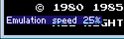
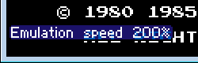

Содержание
От скорости работы эмулятора зависит не только скорость эмуляции, но еще и скорость исчезновения сообщений на экране.
Для отображения на экране скорости работы эмулятора выбери Config -> Display -> FPS.
Некоторые опции доступны в эмуляторе во вкладке NES -> Emulation Speed.
Каждое последующее нажатие постепенно снижает скорость эмуляции.

Каждое последующее нажатие постепенно повышает скорость эмуляции.

Теоретически можно ускорить максимум в 64 раза, но на практике вряд ли получится.
При удержании клавиши эмулятор будет работать с максимально возможной скоростью (быстрее, чем через Speed Up).
Максимальная скорость зависит от производительности твоего компьютера, а также от нагруженности эмулятора при использовании дополнительных окон, например Debugger'а или Hex Editor'а.